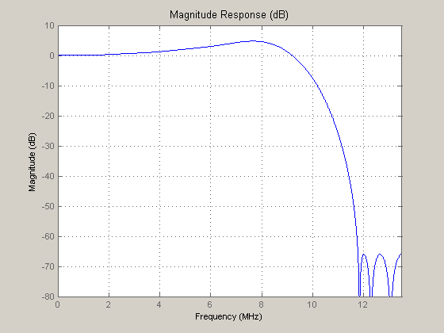
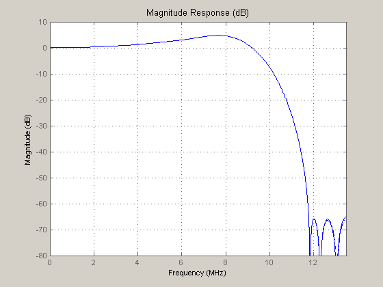
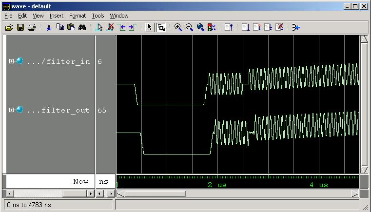
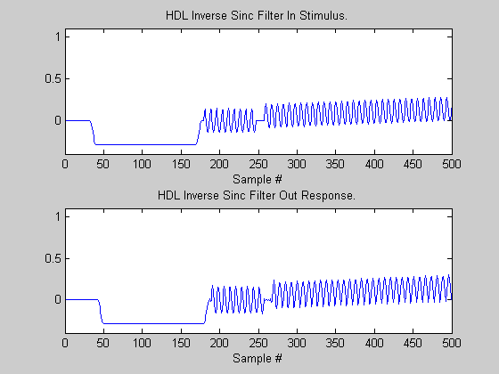

This demonstration illustrates how to generate HDL code for an inverse sinc (sin x/x) peaking filter that adds preemphasis to compensate for the inherent sinc response of the digital-to-analog converter (DAC). The input is a 10-bit video signal and the output is scaled to accomodate the gain of the inverse sinc response.
Use a video sampling rate of 27 MHz and a passband edge frequency of 7.2 MHz. Set the allowable peak-to-peak passband ripple to 0.1 dB and the stopband attenuation to -66 dB. Then, design the filter using firceqrip, and create the double-precision filter as a symmetric FIR filter. Finally, examine the response using fvtool.
Fs = 27e6; % Sampling Frequency in MHz N = 20; % Order Fpass = 7.2e6; % Passband Frequency in MHz slope = 0; % Stopband Slope spectype = 'passedge'; % Frequency Specification Type isincffactor = 1; % Inverse Sinc Frequency Factor isincpower = 1; % Inverse Sinc Power Dstop = 10^(-66/20); % Stopband Attenuation -66 dB ripple = 10^(0.1/20); % Passband Ripple 0.1 dB p-p Dpass = (ripple - 1) / (ripple + 1); % Calculate the coefficients using the FIRCEQRIP function. b = firceqrip(N, Fpass/(Fs/2), [Dpass, Dstop], 'slope', slope, ... spectype, 'invsinc', isincffactor, isincpower); Hd = dfilt.dfsymfir(b); fvtool(Hd,'Fs',Fs); axis([0 Fs/2e6 -80 10]);
Use the infinity norm of freqz to find the maximum inverse sinc gain, then scale this gain into bits, rounding up. Next, create the quantized filter from the double-precision reference filter. Since the specification calls for 10-bit input, select 16-bit coefficients. Check the response with fvtool.
Gbits = ceil(log2(norm(freqz(Hd), inf))); Hd.Arithmetic = 'fixed'; Hd.InputWordLength = 10; Hd.InputFracLength = 9; Hd.OutputWordLength = 10 + Gbits; Hd.OutputMode = 'SpecifyPrecision'; Hd.OutputFracLength = 9; Hd.CoeffWordLength = 16; Hd.AccumMode = 'FullPrecision'; Hd.RoundMode = 'floor'; Hd.OverflowMode = 'wrap'; fvtool(Hd,'Fs',Fs); axis([0 Fs/2e6 -80 10]);
Starting with the correctly quantized filter, generate VHDL or Verilog code. You also have the option of generating a VHDL, Verilog, or ModelSim .do file test bench to verify that the HDL design matches the MATLAB filter.
Create a temporary work directory. After generating the HDL code (selecting Verilog in this case), open the generated Verilog file in the editor.
To generate VHDL instead, change the value of the property 'TargetLanguage', from 'Verilog' to 'VHDL'.
workingdir = tempname; generatehdl(Hd,'Name', 'hdlinvsinc', 'TargetLanguage', 'Verilog',... 'TargetDirectory', workingdir);
Warning: Adding extra quantizer to fir to be compatible with MATLAB filter. (Type "warning off hdlfilter:generatefirhdl:quantizedifference" to suppress this warning.) ### Starting Verilog code generation process for filter: hdlinvsinc ### Generating hdlinvsinc.v file in: C:\Temp\tp034930 ### Starting generation of hdlinvsinc Verilog module ### Starting generation of hdlinvsinc Verilog module body ### HDL latency is 2 samples ### Successful completion of Verilog code generation process for filter: hdlinvsinc
Generate a Verilog test bench to make sure that the result match the response you see in MATLAB exactly. Since this is a video filter, build and specify a stimulus similar to a line of video as the test stimulus.
Fsub = 5e6*63/88; % 3.579545 MHz VoltsperIRE = (7 + 1/7)/1000; % IRE steps are 7.14mV Nsamples = 1716; % 27 MS/s video line userstim = zeros(1,Nsamples); % predefine our array % 8 Sample raised-cosine -40 IRE syncedge = ((cos(pi/2 *(0:7)/8).^2) - 1) * 40 * VoltsperIRE; burst = 20 * VoltsperIRE * sin(2*pi * Fsub/Fs * (0:Fs/(Fsub/9))); userstim(33:40) = syncedge; userstim(41:170) = repmat(-40 * VoltsperIRE, 1, 130); userstim(171:178) = syncedge(end:-1:1); userstim(180:247) = burst; % Ramp with chroma over 1416 samples from 7.5 to 80 IRE with a 20 IRE chroma actlen = 1416; active = 1:actlen; userstim(260:1675) = (((active/actlen * 72.5)+7.5) + ... 20 * sin(2*pi * Fsub/Fs * active)) * VoltsperIRE; userstim(1676:Nsamples) = 72.5 * VoltsperIRE * (41:-1:1)/41; generatetb(Hd, 'Verilog', 'TestBenchName', 'hdlinvsinc_tb',... 'TestBenchStimulus', [],... 'TestBenchUserStimulus', userstim,... 'TargetDirectory', workingdir);
### Starting generation of Verilog Test Bench ### Generating input stimulus ### Done generating input stimulus; length 1716 samples. ### Generating Verilog file hdlinvsinc_tb.v in: C:\Temp\tp034930 ### Done generating Verilog test bench.
The following display show the ModelSim HDL simulator after running the test bench. Compare the ModelSim result with the MATLAB result below.

xrange = 0:Nsamples-1; y = filter(Hd, userstim); subplot(2,1,1); plot(xrange, userstim); axis([0 500 -0.4 1.1]); title('HDL Inverse Sinc Filter In Stimulus.'); xlabel('Sample #'); subplot(2,1,2); plot(xrange, y); axis([0 500 -0.4 1.1]); title('HDL Inverse Sinc Filter Out Response.'); xlabel('Sample #');
You designed a double-precision inverse sinc filter to meet the given specification. You then quantized and checked your design. You generated Verilog code and a Verilog test bench using an approximation of a video line as the test stimulus.
You can use an HDL Simulator, to verify these results. You can also experiment with VHDL and Verilog for both filters and test benches.